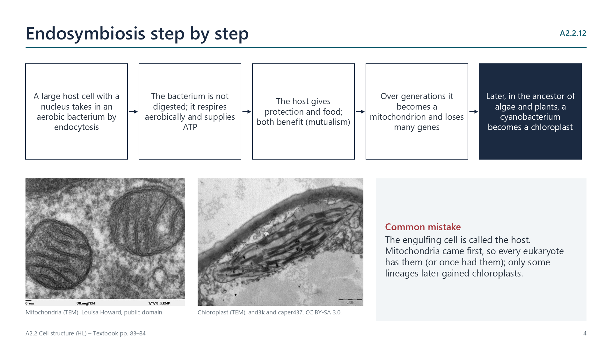

Endosymbiosis
pp. 82–85
All eukaryotes probably share one unicellular ancestor that already had a nucleus and reproduced sexually. A host cell took in an aerobic bacterium by endocytosis but did not digest it. The two came to depend on each other (mutualism), and over many generations the bacterium became a mitochondrion. Later, in the ancestor of algae and plants, an engulfed cyanobacterium became a chloroplast.
Evidence: both organelles have 70S ribosomes, naked circular DNA and a double membrane, are about the size of bacteria, and arise only by binary fission of existing organelles. Their DNA sequences are closest to alphaproteobacteria (mitochondria) and cyanobacteria (chloroplasts). The theory made predictions that sequencing later confirmed.